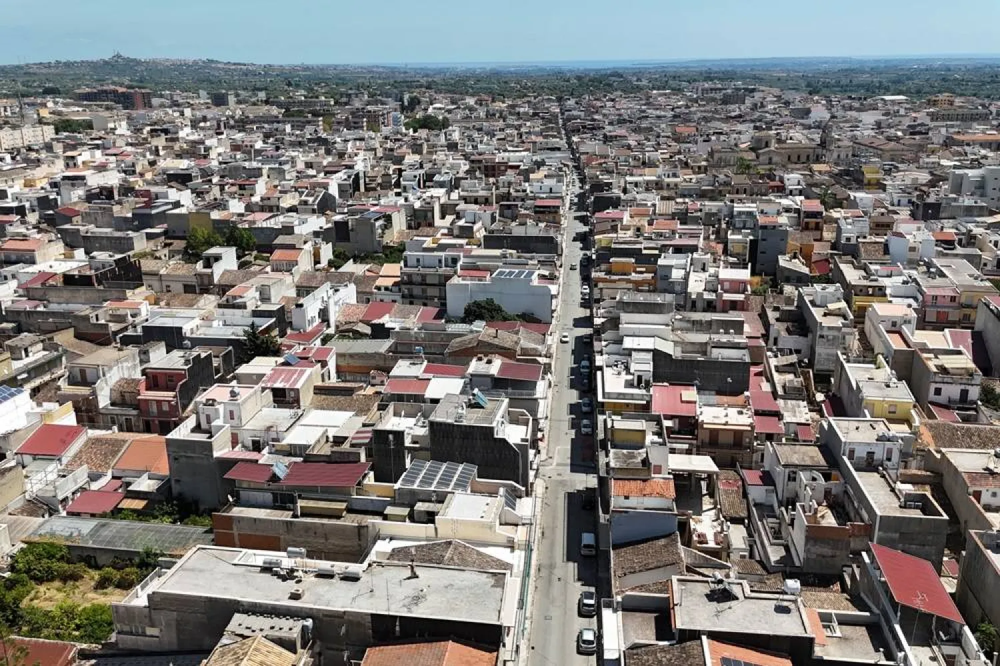

Europe's hottest town says climate change is reshaping daily life
2026, August 21

Europe's hottest town says climate change is reshaping daily life
2026, August 21
Italy
This report from 21 August 2026 is a striking example of climate change becoming a day-to-day issue rather than simply a scientific prediction.🇮🇹 Floridia, Sicily — Europe's hottest town
The town is Floridia, in southeastern Sicily, near Syracuse. It gained international attention in August 2021, when a temperature of 48.8°C was recorded in the area — the highest temperature ever recorded in Europe, subsequently recognised by the World Meteorological Organization.
Five years later, Reuters went back to Floridia and found that the change isn't just about occasional temperature records.
🌡️ Life is changing
Residents are increasingly having to adapt their daily routines:
People avoid going outside during the hottest part of the day.
Public squares that were traditionally busy are now often almost deserted.
The Sicilian tradition of going outside in the evening to "pigghiari u frescu" — essentially going out to catch the cool air — is becoming harder because nights aren't cooling sufficiently.
Agriculture is under increasing pressure from heat and water shortages.
Wildfires and other extreme-weather events are becoming a greater concern.
And the night-time temperatures may actually be one of the most worrying aspects. It's not simply that the maximum temperature occasionally reaches 45–49°C; the environment is staying warmer for longer, giving people, animals and ecosystems less opportunity to recover overnight.
🐝 A particularly interesting example: bees
Floridia's beekeeping industry has been badly affected. Heat and other environmental pressures have contributed to large losses of bee colonies and declining honey production.
That creates a knock-on effect: fewer bees don't just mean less honey — they can also mean less pollination and damage to local biodiversity.
🌍 Why this matters beyond Sicily
The story fits into a much larger European trend. Recent research reported by Reuters found that the Mediterranean Sea reached a record average temperature of about 27°C in July 2026, while a buoy near Mallorca recorded approximately 33°C in early August. Scientists say human-caused climate change is the dominant reason for these exceptional temperatures.
So Floridia is effectively a preview of what adaptation to extreme heat can look like: changing working hours, avoiding the middle of the day, greater reliance on cooling, altered agriculture and eventually changes to how towns are designed.
And this is particularly relevant to Malta. We are in the same Mediterranean climate system, surrounded by the same increasingly warm sea. The difference between Floridia and Malta isn't enough to make the issue feel remote — the Mediterranean's warming can affect both locations through heat, humidity, rainfall patterns, marine ecosystems and extreme weather.
In other words, the interesting part of this story isn't really that "Europe's hottest town reached 48.8°C." It's that people are beginning to reorganise ordinary life around temperatures that would once have been considered extraordinary.